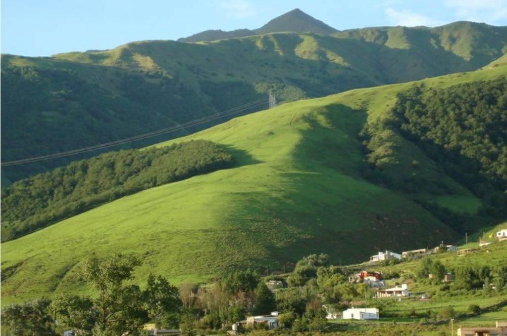
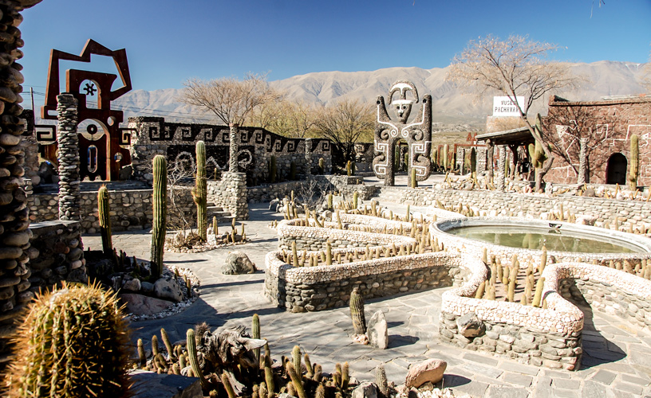
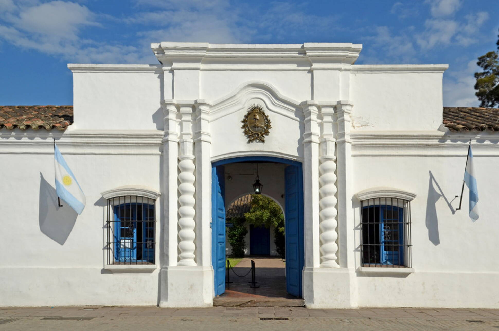

¿Quien Soy?
Me llamo Cintia Argañaraz, tengo 27 años y soy de Concepción, Tucumán.
Lugares de Tucumán para visitar
Tafí del Valle

Tafí del Valle es una localidad que se encuentra ubicada en el departamento homónimo, del cual es cabecera, en el oeste de la Provincia de Tucumán, a 126 km de la capital provincial, San Miguel de Tucumán.
Amaicha del Valle
Amaicha del Valle se ubica al noroeste de la provincia de Tucumán, 2000 metros de altura sobre el nivel del mar.
Casa Historica
La Casa de Tucumán, Casa Histórica de la Independencia o Casita de Tucumán, es una casa colonial localizada en el centro de la ciudad argentina de San Miguel de Tucumán, donde un cuerpo de delegados de la mayoría de las Provincias Unidas del Río de la Plata, conocido como el Congreso de Tucumán, proclamó la declaración de independencia de la Argentina el 9 de julio de 1816